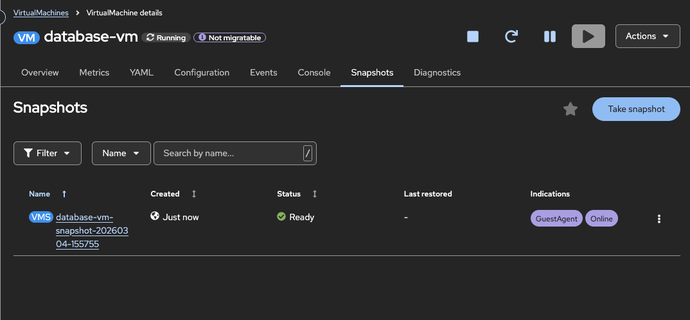

VM スナップショットの作成と管理
概要
VM スナップショットは、仮想マシンの特定の時点の状態をキャプチャし、ディスクとオプションでメモリー状態を含みます。スナップショットにより、更新に失敗した場合の迅速なロールバック、変更の安全なテスト、メンテナンス操作の前に復元点の作成が可能になります。
このチュートリアルでは、OpenShift Virtualization で VM スナップショットの作成、管理、復元について説明します。
前提条件
-
OpenShift 4.18+ に OpenShift Virtualization がインストールされている
-
スナップショットを取ろうとする停止したまたは実行中の VM
-
CSI スナップショットをサポートするストレージクラス
-
ocとvirtctlCLI ツールがインストールされている
スナップショットストレージサポートの確認
スナップショットを作成する前に、ストレージが CSI スナップショットをサポートしているか確認します:
oc get volumesnapshotclass例出力:
NAME DRIVER DELETIONPOLICY AGE
csi-hostpath-snapclass hostpath.csi.k8s.io Delete 30d
ocs-storagecluster-rbdplugin-snapclass openshift-storage.rbd.csi.ceph.com Delete 30dVolumeSnapshotClass が存在しない場合は、クラスター管理者に、ストレージプロバイダーに対する VolumeSnapshotClass を構成するように依頼してください。
VM スナップショットの理解
スナップショットリソース
OpenShift Virtualization は、2 つの主要リソースを使用した VM スナップショット:
- VirtualMachineSnapshot
-
VM スナップショットの作成を要求するもの。ソース VM とスナップショット構成への参照を含みます。
- VirtualMachineSnapshotContent
-
実際のスナップショットデータ。VirtualMachineSnapshot が処理されると自動的に作成されます。VolumeSnapshot に参照を含みます。
オンラインとオフラインのスナップショット
| タイプ | 説明 | 要件 |
|---|---|---|
オフラインスナップショット |
VM が停止している状態で作成されたスナップショット。一貫した状態が保証されます。 |
VM を停止する必要があります。 |
オンラインスナップショット |
VM が実行中の状態で作成されたスナップショット。一貫した状態を保証するためにファイルシステムのクイーズが必要です。 |
QEMU ゲストエージェントが VM 内でインストールされて実行されている必要があります。 |
ヒント: 重要なワークロードの場合、オフラインスナップショットを使用するか、オンラインスナップショットの QEMU ゲストエージェントがインストールされていることを確認して、ファイルシステムの一貫性を保証してください。
オンラインスナップショットのデフォルトタイムアウトは 5 分です。この期間内にスナップショットが完了しない場合、そのステータスは Failed に設定され、ファイルシステムが解凍され、VM が通常の操作に戻ります。failureDeadline フィールドを VirtualMachineSnapshot spec に設定することでこのデッドラインを調整できます (例: failureDeadline: 10m)。
スナップショットのインジケーター
オンラインスナップショットが完了した後、status.indications フィールドは、スナップショットがどのように作成されたかを報告します:
| インジケーター | 意味 |
|---|---|
|
スナップショット作成時に VM が実行中であったことを示します。 |
|
QEMU ゲストエージェントがファイルシステムをクイーズに成功したことを示します。アプリケーション一貫性のあるスナップショットです。 |
|
QEMU ゲストエージェントがインストールされていないか、準備ができていないことを示します。スナップショットはクラッシュ一貫性のみです。 |
|
ゲストエージェントがクイーズを試みたが失敗したことを示します。アプリケーション一貫性が保証されていないが、スナップショットは作成されました。 |
スナップショットのインジケーターを確認する:
oc get virtualmachinesnapshot <snapshot-name> -n vm-snapshots -o json | jq '.status.indications'例出力:
[
"GuestAgent",
"Online"
]スナップショットの作成
Web コンソールでのスナップショットの作成
-
仮想化 → 仮想マシンに移動します
-
スナップショットを取ろうとする VM をクリックします
-
スナップショット タブに移動します

-
スナップショットを取る をクリックします

-
スナップショットの名前とオプションの説明を入力します
-
保存 をクリックします
スナップショットの作成が完了すると、スナップショットタブでステータスが表示されます。

CLI でのスナップショットの作成
VirtualMachineSnapshot リソースを作成します:
apiVersion: snapshot.kubevirt.io/v1beta1
kind: VirtualMachineSnapshot
metadata:
name: database-vm-snapshot-01
namespace: vm-snapshots
spec:
source:
apiGroup: kubevirt.io
kind: VirtualMachine
name: database-vmスナップショットを適用します:
oc apply -f vm-snapshot.yamlスナップショットの作成を確認
スナップショットのステータスを確認します:
oc get virtualmachinesnapshot -n vm-snapshots例出力:
NAME SOURCEKIND SOURCENAME PHASE READYTOUSE CREATIONTIME ERROR
database-vm-snapshot-20260304-155755 VirtualMachine database-vm Succeeded true 8m詳細なステータス:
oc describe virtualmachinesnapshot <snapshot-name> -n vm-snapshotsキーなステータスフィールド:
-
Phase:
InProgress,Succeeded, またはFailed -
ReadyToUse:
trueで、スナップショットが復元に使用できる場合 (Web コンソールのステータス列で Ready と表示される) -
Error: スナップショットが失敗した場合にエラーメッセージが含まれます
スナップショットの管理
スナップショットのリスト表示
-
名前空間内のすべてのスナップショットをリスト表示:
oc get virtualmachinesnapshot -n vm-snapshots-
すべての名前空間でのスナップショットをリスト表示:
oc get virtualmachinesnapshot -A-
Web コンソールでのスナップショットの表示:
-
VM の詳細ページに移動します
-
スナップショット タブに移動します
-
すべてのスナップショットのステータスと作成時刻を表示します
スナップショットの詳細を表示
oc describe virtualmachinesnapshot <snapshot-name> -n vm-snapshots下層の VolumeSnapshot を表示するには:
oc get virtualmachinesnapshotcontent -n vm-snapshots例出力:
NAME READYTOUSE CREATIONTIME ERROR
vmsnapshot-content-cd166db8-00be-4aa9-972e-dea669527bfd true 8moc get volumesnapshot -n vm-snapshots例出力:
NAME READYTOUSE SOURCEPVC RESTORESIZE SNAPSHOTCLASS CREATIONTIME AGE
vmsnapshot-cd166db8-00be-4aa9-972e-dea669527bfd-volume-rootdisk true database-vm-disk 30Gi lvms-vg1 8m 8m復元
スナップショットから VM を復元すると、スナップショットでキャプチャされた状態に VM のディスクが戻ります。
重要: スナップショットから復元する前に、VM を停止する必要があります。targetReadinessPolicy: StopTarget を VirtualMachineRestore spec に設定することで、このプロセスを自動化できます。他のオプションには、FailImmediate (デフォルト)、WaitGracePeriod (最大 5 分待機)、WaitEventually (無限に待機) があります。詳細については、Red Hat ドキュメント を参照してください。
Web コンソールでの復元
-
VM の詳細ページに移動します
-
VM が停止していることを確認します (実行中の場合は停止します)
-
スナップショット タブに移動します
-
復元したいスナップショットの横にある三点メニューをクリックします
-
VirtualMachinesnapshot を復元する を選択します

-
復元操作を確認します

CLI での復元
VirtualMachineRestore リソースを作成します:
apiVersion: snapshot.kubevirt.io/v1beta1
kind: VirtualMachineRestore
metadata:
name: database-vm-restore-01
namespace: vm-snapshots
spec:
target:
apiGroup: kubevirt.io
kind: VirtualMachine
name: database-vm
virtualMachineSnapshotName: database-vm-snapshot-01復元を適用します:
oc apply -f vm-restore.yaml復元の確認
復元のステータスを確認します:
oc get virtualmachinerestore -n vm-snapshots例出力:
NAME TARGETKIND TARGETNAME COMPLETE RESTORETIME ERROR
database-vm-restore-01 VirtualMachine database-vm true 2m詳細なステータス:
oc describe virtualmachinerestore database-vm-restore-01 -n vm-snapshots復元が完了したら、VM を開始します:
virtctl start database-vm -n vm-snapshotsVM が復元された状態で実行中であることを確認します:
oc get vm database-vm -n vm-snapshotsスナップショットの削除

ストレージに関する考慮事項
CSI ドライバーの要件
VM スナップショットには、スナップショット機能をサポートする CSI (コンテナーストレージインターフェース) ドライバーが必要です。一般的にサポートされているストレージソリューションには:
-
Red Hat OpenShift Data Foundation (ODF)
-
AWS EBS CSI
-
Microsoft Azure Disk CSI
-
Google Cloud Persistent Disk CSI
-
LVM Storage (LVMS)、thin-pool デバイスクラスを使用する場合
-
VMware vSphere CSI
-
NetApp Trident
-
Pure Storage
-
Dell CSI ドライバー
VolumeSnapshotClass の構成
VolumeSnapshotClass は、スナップショットの作成と管理方法を決定します。ストレージクラスが対応する VolumeSnapshotClass を持っているか確認します:
# ストレージクラスの確認
oc get storageclass
# 対応する VolumeSnapshotClass の確認
oc get volumesnapshotclassスナップショットが失敗した場合は、snapshot class がストレージプロビジョナーと一致していることを確認してください。
ストレージスペース
スナップショットはストレージスペースを消費します。考慮してください:
-
コピー・オン・ライト: ほとんどの CSI ドライバーはコピー・オン・ライトを使用するので、初期スナップショットのサイズは小さい
-
時間の経過とともにの成長: VM のディスクが変更されるにつれて、スナップショットストレージが増加します
-
複数のスナップショット: 各スナップショットが追加のスペースを消費します
-
クリーンアップポリシー: 古いスナップショットを定期的に削除してスペースを解放します
oc get volumesnapshot -n vm-snapshots -o wide例出力:
NAME READYTOUSE SOURCEPVC RESTORESIZE SNAPSHOTCLASS CREATIONTIME AGE
vmsnapshot-cd166db8-00be-4aa9-972e-dea669527bfd-volume-rootdisk true database-vm-disk 30Gi lvms-vg1 9m 9mトラブルシューティング
スナップショットが InProgress に残っている
問題: VirtualMachineSnapshot が InProgress ステータスで残っています。
可能な原因:
-
オンラインスナップショットのタイムアウト (デフォルト 5 分の
failureDeadline) -
QEMU ゲストエージェントが応答していません
-
ストレージプロバイダーが遅いか応答していません
解決策:
oc describe virtualmachinesnapshot <snapshot-name> -n <namespace>status.conditions と status.indications フィールドを確認します。タイムアウトによるスナップショットの失敗の場合、snapshot spec に failureDeadline を増やしたり、オフラインスナップショットを取ることを検討してください。
スナップショットの NoGuestAgent または QuiesceFailed のインジケーター
問題: スナップショットが完了したが、インジケーターが NoGuestAgent または QuiesceFailed であるため、スナップショットはクラッシュ一貫性のみです。
解決策: VM 内に QEMU ゲストエージェントをインストールして実行します:
# Fedora/RHEL VM の場合
sudo dnf install -y qemu-guest-agent
sudo systemctl enable --now qemu-guest-agentエージェントが実行中であることを確認します:
oc get vmi database-vm -n vm-snapshots -o jsonpath='{.status.conditions}' | jq '.[] | select(.type=="AgentConnected")'復元が失敗した場合、VM がまだ実行中
問題: VirtualMachineRestore が、ターゲット VM が停止していないというエラーを示し、復元が失敗しました。
解決策: 復元する前に VM を停止するか、VirtualMachineRestore spec に targetReadinessPolicy: StopTarget を設定して、コントローラーが自動的に停止させるようにします:
virtctl stop database-vm -n vm-snapshots
oc wait vm database-vm -n vm-snapshots --for=jsonpath='{.status.printableStatus}'=Stopped --timeout=120sスナップショットが作成されない場合、VolumeSnapshotClass がない
問題: スナップショットの作成が失敗し、ストレージプロバイダーと一致する VolumeSnapshotClass が存在しません。
解決策: ストレージクラスに対応する VolumeSnapshotClass が存在することを確認します:
oc get storageclass -o jsonpath='{range .items[*]}{.metadata.name}{"\t"}{.provisioner}{"\n"}{end}'
oc get volumesnapshotclass -o jsonpath='{range .items[*]}{.metadata.name}{"\t"}{.driver}{"\n"}{end}'VolumeSnapshotClass の driver は、StorageClass の provisioner と一致する必要があります。存在しない場合は、VolumeSnapshotClass を作成するか、クラスター管理者に連絡してください。
クリーンアップ
このチュートリアルで作成したリソースを削除します:
oc delete virtualmachinerestore --all -n vm-snapshots
oc delete virtualmachinesnapshot --all -n vm-snapshotsクリーンアップを確認します:
oc get virtualmachinesnapshot -n vm-snapshots
oc get volumesnapshot -n vm-snapshots要約
このチュートリアルで学んだこと:
-
OpenShift Virtualization での VM スナップショットリソースの仕組み
-
オンラインとオフラインのスナップショットとスナップショットのインジケーターの違い
-
Web コンソールと CLI を使用したスナップショットの作成
-
スナップショットのリスト、管理、削除
-
VM からのスナップショットからの復元
-
スナップショットのストレージ要件と考慮事項
-
スナップショット操作の一般的なトラブルシューティング技術
参照
-
virtctl を使用した仮想マシンの管理 - VM 管理用の CLI コマンド
-
カスタムゴールデンイメージとの仮想化イメージの作成 - 再利用可能な VM イメージの作成
-
仮想マシンのクローン作成による迅速なデプロイ - スナップショットから VM をクローンする (含む)